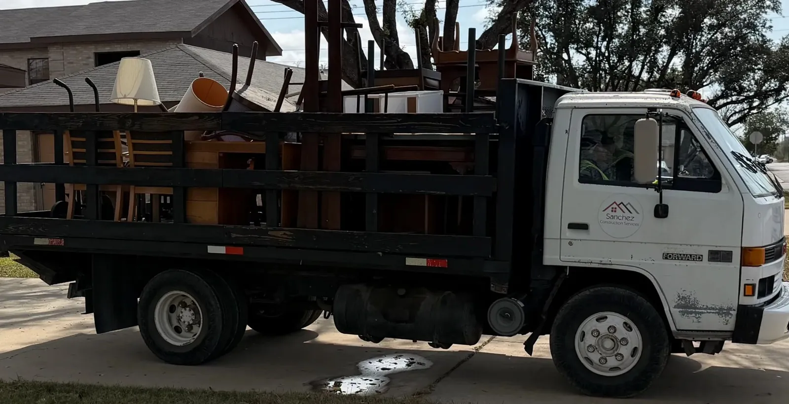

Home / Contact
Contact
Tell us about your project.
Send us a message, or call us for a quote. Tell us more about your project, and we will connect you with the services to fit your needs.
Give us a call!
Reach us
Sanchez Construction Services
2507 Market Street, Laredo, Texas 78043
Hours
Mon–Fri 8 AM–6 PM
- Monday8 AM – 6 PM
- Tuesday8 AM – 6 PM
- Wednesday8 AM – 6 PM
- Thursday8 AM – 6 PM
- Friday8 AM – 6 PM
- SaturdayClosed
- SundayClosed
Get a quote
Request a quote
FAQ
Good questions.
What kind of work does Sanchez Construction Services do?
Commercial and residential construction, including new construction and repairs/restorations, plus 23 listed services such as roofing, painting, drywall, flooring, bathroom remodeling, masonry, cement slabs, asphalt and parking lot restriping, ranch services, dump trailer and moving services.
Can you work at a business that stays open during construction?
Yes. Occupied and fully operational job sites are never a problem, and multi-phase jobs can be planned, managed and built.
How do I get a quote?
Call (956) 206-3885 Monday to Friday, 8 AM to 6 PM, or email jcsanc@sbcglobal.net with a few details about your project.
Where are you located?
2507 Market Street, Laredo, Texas 78043.
What happens when the build is finished?
Post-construction covers site cleanup, systems training, final inspections and move-in coordination, followed by a final walkthrough to make sure you are completely satisfied.